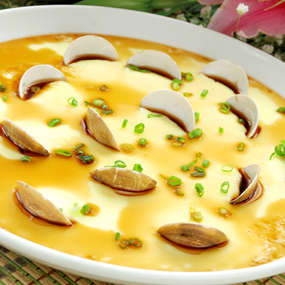

花蚬蒸蛋
2019-07-01 20:26:33
516浏览

-
适宜人群:
一般人群均可食用。尤适宜【发育期婴幼儿】
-
禁忌人群:
【高热、腹泻、肝炎、肾炎、胆囊炎、冠心病】患者忌食。
花蚬蒸蛋 所需材料
- 鸡蛋 3个
- 花蚬 适量
- 枸杞子 适量
- 葱 少许
- 香油 适量
- 盐 适量
- 姜 少许
- 料酒 适量
花蚬蒸蛋 做法步骤详解
 1
1
准备食材
 2
2
把花蚬用冷水清泡俩个小时，这样就会把泥吐出来了
 3
3
锅里放入少许姜和料酒
 4
4
开锅煮半分钟开口就可以，煮花蚬的水装碗里备用
 5
5
摆出自己喜欢的样子
 6
6
鸡蛋打好，加入之前凉的花蚬水，少许盐，搅拌均匀，用筛子过滤一下
 7
7
放入花蚬碗里
 8
8
用保鲜膜包好，大火开锅转中火蒸八分钟即可
 9
9
蒸好的蛋羹，看着嫩滑的，加葱花，香油家枸杞子就可以了